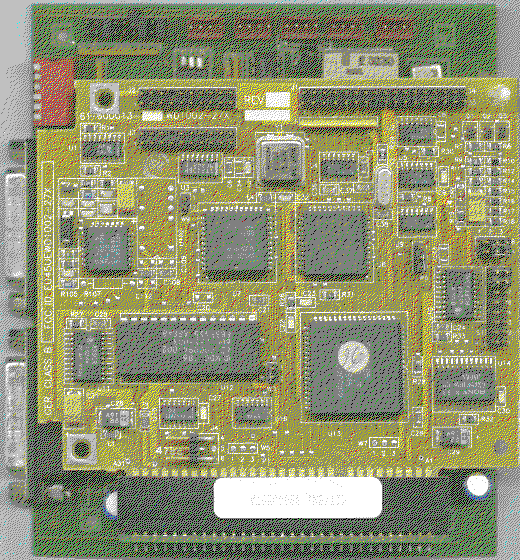

Previous
Next
TOC
Fujitsu 2227
HDPlus 60
Rodime 3057
" nur mit speziellen Rodime Bios!
In der HDPlus 80 und 120 sind jeweils zwei 40MB oder 60MB Laufwerke
enthalten!
Die DIP-Schalterbelegung:
654321
--------------------------
J1|
|
------
1-3 Adapteradresse 0-7 für Festplatte 1
4+5 Adapteradresse 0-3 für Festplatte 2
6
ist der Hardwareschreibschutz (ab VBIOS 1.05)
Quelle: Service Handbuch - Volume II
vortex HDPLUS und vortex SIDELOADER
Achtung, Vortex hat in den HD Plus Systemen verschiedene Hostadapter
eingebaut. Diese sind zwar untereinander kompatibel aber leider nicht
in der Datentransferrierung und -aufzeichnung zur Festplatte.

Kapitel Die Vortex HDPlus Festplatte, Seite 3